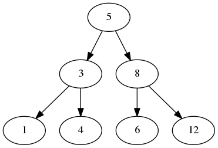
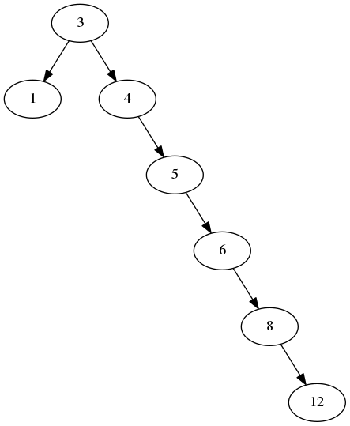

Rob Ludwick (@robludwick)
11/11/2015
$ git clone https://github.com/rcludwick/presentations
Great question...

It is perceived as the best predictor for a short interview process.
- But it does seem unfair...
- ...especially if they ask you questions outside your immediate domain knowledge
- They expect people to interview more than once
- 60% of their employees did not succeed on the first interview
- It's not the best way to interview people unless you have the resources, say, Google.
https://twitter.com/mxcl/status/608682016205344768
- Whiteboard or Shared Document Platform (Google Docs)
- Some problem of some algorithmic nature is presented
- Timed (25 minutes) to do as well as you can

- A way to describe time or space requirements for a given problem, useful for algorithms on large datasets
- \(O(1)\) means constant time or space
- \(O(Log N)\) means logarithmic time or space
- \(O(N)\) means linear time or space
- \(O(N^2)\) means polynomial time or space
- \(O(2^N)\) means exponential time or space
for y in range(len(x))[::-1]:
for z in range(y):
if x[z] > x[z+1]:
x[z], x[z+1] = x[z+1], x[z]
This is \(O(N^2)\)
Why?
- The algorithm goes through a nested loop.
def linear_search(x, l):
"""
Finds x in a sorted list l
:return: True if x is in l, False if x is not in l
"""
for y in l:
if y == x:
return True
return False
def binary_search(x, l):
left = 0
right = len(l) - 1
old_mid = left
while True:
mid = (left + right) // 2
if l[mid] == x:
return True
if old_mid == mid:
return False
if x < l[mid]:
right = mid
else:
left = mid
old_mid = mid
On large data sets N>1M, Big O optimizations help immensely.
- \(O(NLogN) << O(N^2)\)

Unbalanced Binary Tree

Assume:
class TreeNode(object):
def __init__(self, val=None, left=None, right=None):
self.val = val
self.right = right # Right and left point to
self.left = left # other TreeNode instances
Given a binary tree, mirror it, swapping the left and right everywhere.
def mirror(treenode):
"""DFS Solution"""
if treenode.left is not None:
mirror(treenode.left)
if treenode.right is not None:
mirror(treenode.right)
trenode.left, treenode.right = treenode.right, treenode.left
def mirror(treenode):
"""BFS Solution"""
nodes = [treenode]
while nodes:
node = node.pop(0)
if node.left is not None:
nodes.append(node.left)
if node.right is not None:
nodes.append(node.right)
node.left, node.right = node.right, node.left
Both solutions in this case are effectively \(O(N)\)
Given two rectangles, return the area that they intersect. If they don't intersect, return 0.
class Rectangle(object):
def __init__(self, x1, y1, x2, y2):
self.x1 = x1
self.x2 = x2
self.y1 = y1
self.y2 = y2
Starting at the top left corner of a 2x2 grid, and only being able to move right and down, there are 6 routes to the bottom right corner

What's the fastest answer we can expect?
- \(O(1)\)
Why?
- Working out the solution for a 4 x 4 cube gives answers equal to Pascal's Triangle

Why?
- Each number corresponds to \(n! /(n - r)! r!\) which calculates the number of combinations.
- The triangle is rotated 45 degrees and x and y need to be translated.
Introduction to Algorithms, Third Edition (Cormen, Leiserson, Rivest, Stein)

Algorithms, Fourth Edition (Sedgewick)